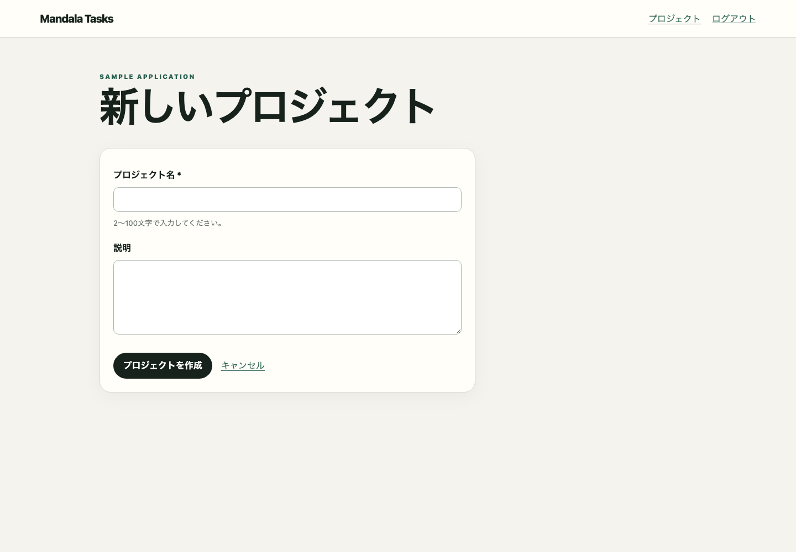

PLAYWRIGHT OBSERVATION
観測済み画面遷移図
E2Eで観測した画面をスクリーンショット付きのNodeとして配置し、NAVIGATES_TOを線で結んだ全体俯瞰図です。個々の遷移と画面内状態は各画面の資料で確認できます。
SCREEN MAP
画面接続マップ
画面を選択すると、1対1の遷移、状態、操作、条件分岐、関連HTTPを確認できます。
 Not Found
Not Found/does-not-exist1状態 おかえりなさい
おかえりなさい/login2状態 プロジェクト
プロジェクト/projects5状態
新しいプロジェクト/projects/new2状態 Atlas Renewal
Atlas Renewal/projects/{id}3状態 プロジェクトを編集
プロジェクトを編集/projects/{id}/edit1状態 新しいタスク
新しいタスク/projects/{id}/tasks/new1状態 API設計
API設計/tasks/{id}2状態 タスクを編集
タスクを編集/tasks/{id}/edit1状態- /login → /projects
- /projects/new → /projects/{id}
- /projects/{id} → /projects
- /projects/{id}/edit → /projects/{id}
- /projects/{id}/tasks/new → /tasks/{id}
- /tasks/{id} → /projects/{id}
- /tasks/{id}/edit → /tasks/{id}